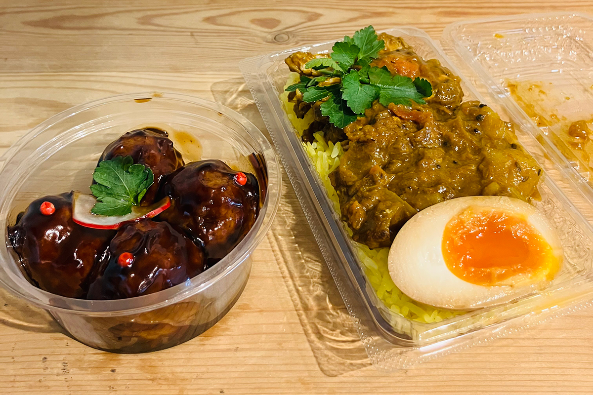
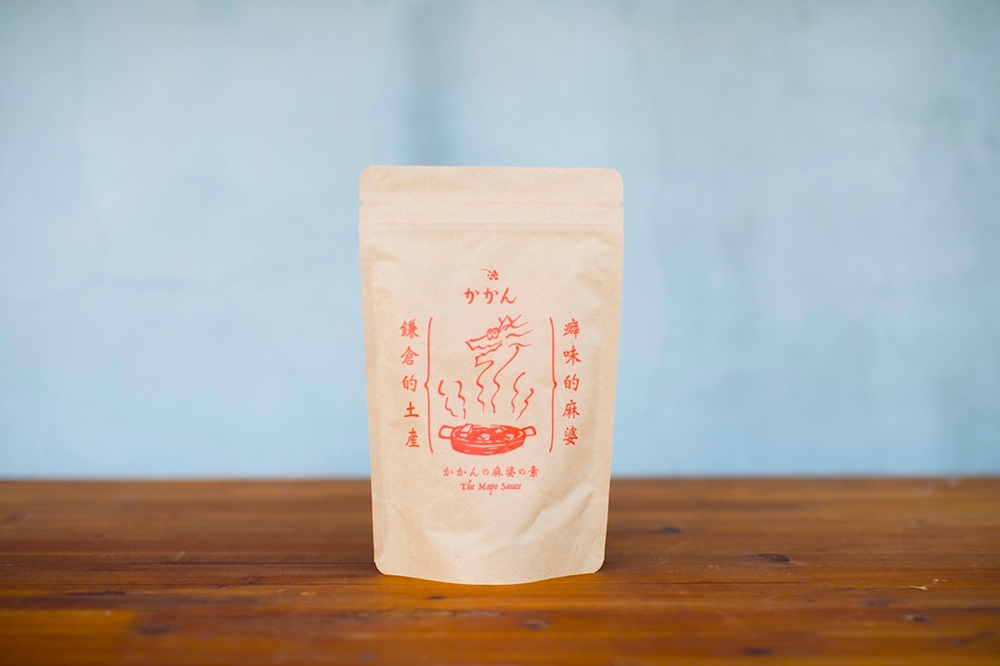
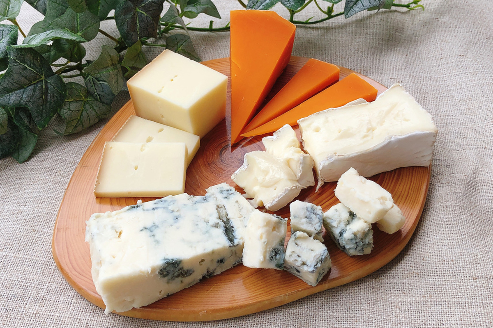

Префектура Канагава · Камакура · еда на вынос
Камакура на вынос: где местные покупают еду популярных заведений без очереди

В Камакуре у популярных заведений стоят длинные очереди, а местные жители знают обходной путь: брать еду с собой. Хозяйка магазина посуды и вещей для дома, которая живёт в городе, рассказывает о трёх своих адресах.
Город
Почему в Камакуре берут еду с собой
На станции Камакура всегда много приезжих: молодые пары, семьи с детьми, японцы и иностранцы. Все ищут что-нибудь вкусное, и длинные очереди у дверей популярных заведений давно стали одной из примет города.
В Камакуре многие известные места не принимают бронь, работают недолго и рано закрываются. Мест в зале мало, и поесть внутри можно, только отстояв очередь. По мнению хозяйки магазина посуды и вещей для дома «Нацуцубаки», который занимает старый японский дом в Камакуре, именно отсюда и берутся эти очереди.
Местным жителям тоже хочется вкусного, но стоять по часу к открытию каждый раз в обычной жизни невозможно. Поэтому в Камакуре привыкли брать еду с собой. Старое заведение с карри продаёт соседям замороженный соус, другие рестораны по предварительному заказу собирают блюда в контейнеры. В городе, где приезжие и местные живут бок о бок, культура еды на вынос развилась особенно хорошо.
Рынок
SAUCE The Corner: блюда нескольких поваров в одной витрине
В Камакуре есть идзакая «Охама», где очень трудно получить бронь. За стойкой здесь подавали недорогие и вкусные готовые блюда, но в 2024 году заведение было закрыто на перерыв. Узнав, что эти блюда можно купить на рынке Камакура тюо сёкухин итиба, хозяйка «Нацуцубаки» отправилась туда.
Маленькая лавка SAUCE The Corner стоит в углу рынка и продаёт обеды в коробках и готовые блюда нескольких поваров из Камакуры и окрестностей. В витрине знакомые сюмай и картофельный салат, и мысль о том, что тот самый вкус можно унести домой, поднимает настроение.
SAUCE The Corner
- Адрес
- префектура Канагава, Камакура, Комати, 1-13-10, внутри рынка
- Телефон
- нет
- Часы работы
- 10:00–16:00
- Выходные
- понедельник, вторник
Сувениры
«Миягэя Какан»: мапо тофу дома
Заведение «Какан» в квартале Онаримати, у которого всегда стоит очередь, славится своим мапо тофу. Блюда здесь можно взять и на вынос, но есть и другой вариант: если идти по улице Вакамия-одзи к морю, перед красными воротами тории стоит сувенирная лавка «Миягэя Какан». Здесь продают соус для мапо тофу в пакетах: достаточно смешать его дома с тофу, и получится настоящее блюдо со вкусом заведения.

«Миягэя Какан»
- Адрес
- префектура Канагава, Камакура, Юигахама, 2-3-2
- Телефон
- +81 467-37-5813
- Часы работы
- 11:00–18:00
- Выходные
- вторник
Сыр
PORTAM: сыр к пикнику у моря
Ещё одно любимое место хозяйки «Нацуцубаки» это магазин сыра PORTAM. На маленькой террасе можно выпить вина с сыром, и по выходным после работы она иногда встречается здесь с мужем. Если свободных мест нет, сыр можно взять с собой. Хорошо купить набор из нескольких сортов и, пробуя понемногу, найти свой.

Весной, когда становится тепло, можно набрать в таких лавках любимых блюд и напитков и устроить пикник на берегу моря или в парке. В Камакуре легко взять велосипед в прокате и доехать до пляжа Ситиригахама или мыса Инамурагасаки.
PORTAM
- Адрес
- префектура Канагава, Камакура, Онаримати, 15-11
- Телефон
- +81 467-22-2418
- Часы работы
- 10:00–19:00
- Выходные
- нерегулярно